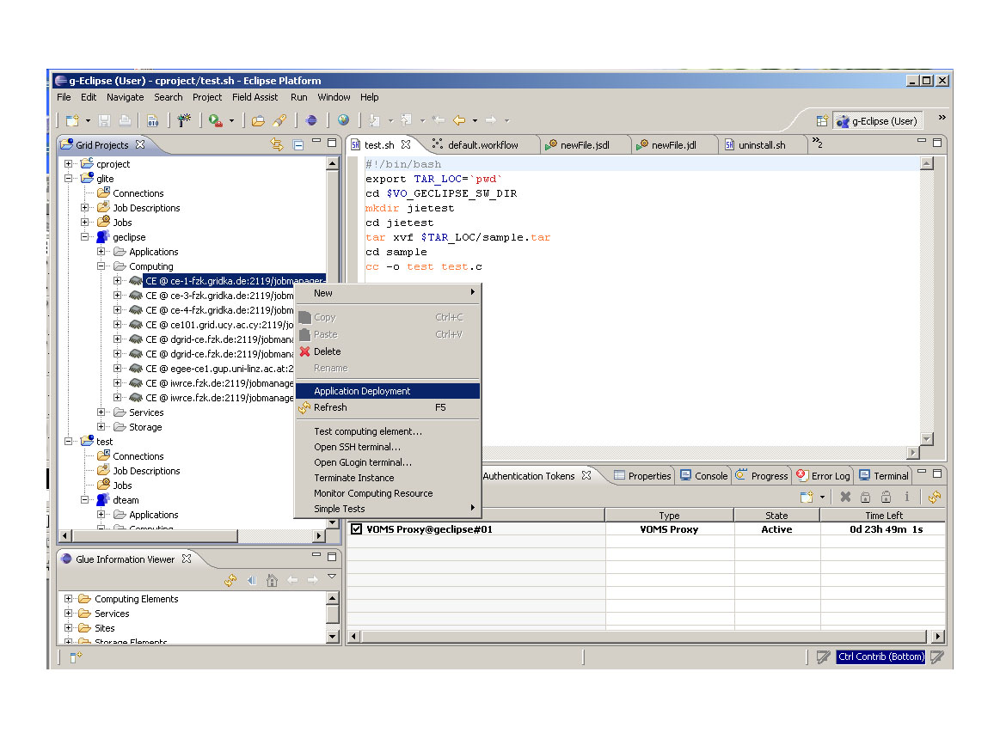
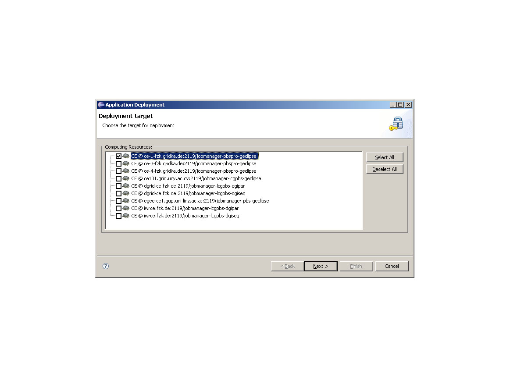
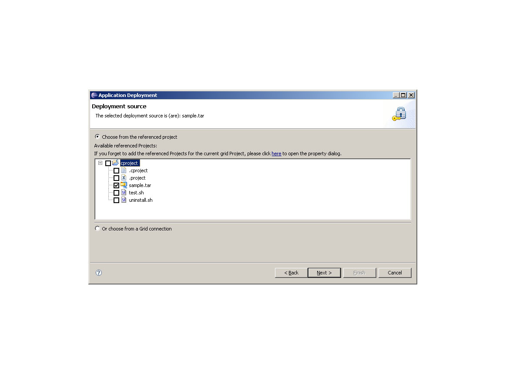
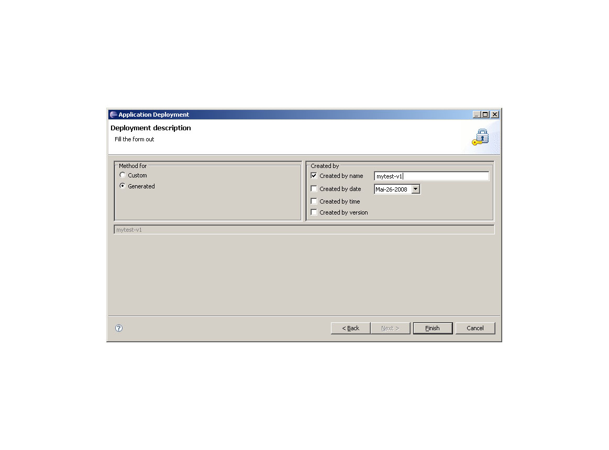
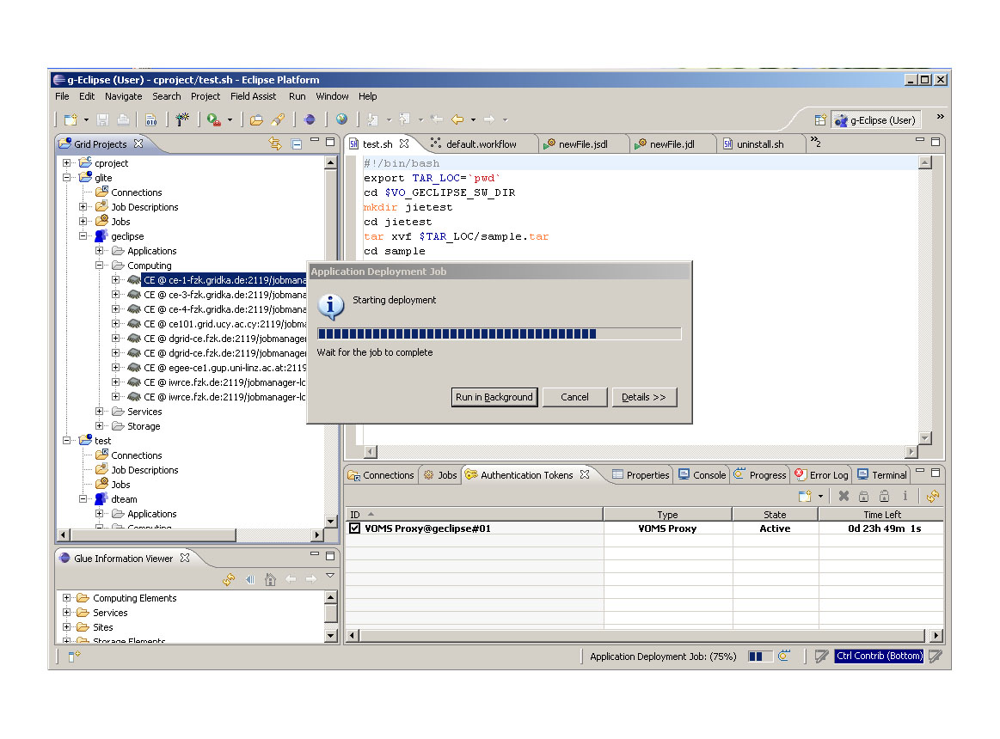
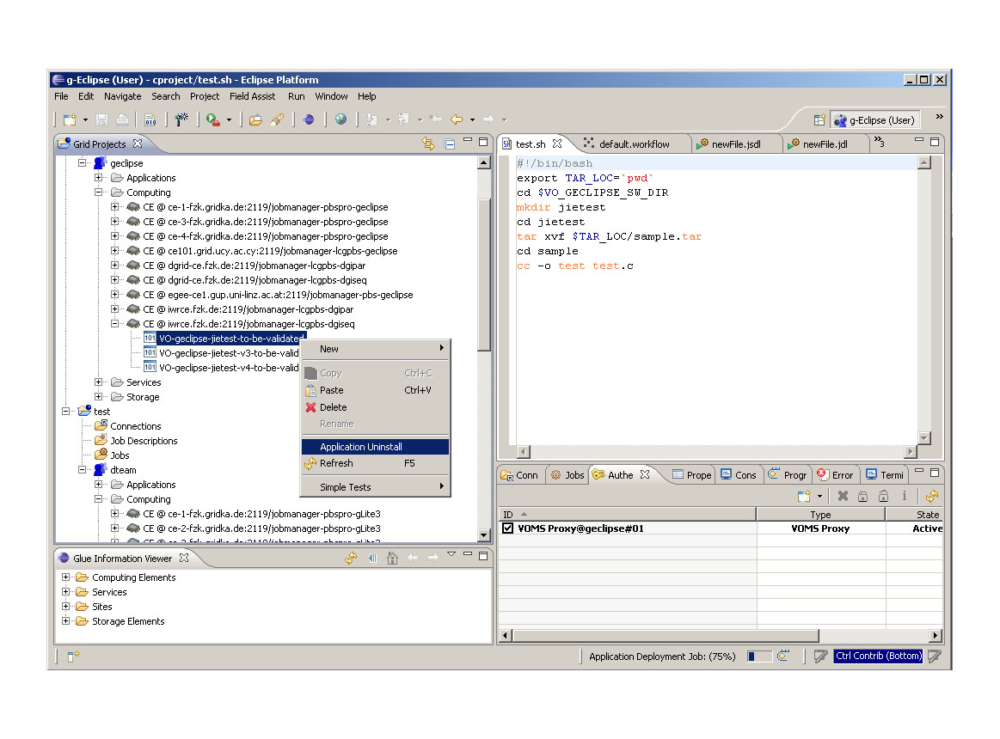
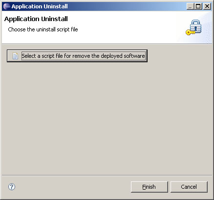

Application deployment deals with cases of software installation on computing elements. The software can be binary or source codes in a tar or other archive form, or just a few programs in a certain programming language. The task of a deployment is to make the software ready on the CEs (i.e. all work nodes of a CE) for use of later. This means, the software is installed on a specific directory which is stored in an environment variable. In some cases, the software can be invoked using web services. To deploy, a user usually has to give instructions how to install or build the software on the CEs.
After installation, the deployed application will be published: there is an Application folder combined with the VO where all applications for the VO are presented; an application is also shown on the CE in the Computing folder.
Only users who have got a role of deployer in his VO can deploy applications. To get this role, please contact your VO manager. For using the deployment functionality, this role must be specified during the creation of an authentication token.
First the Deployment Wizard has to be invoked. There are two positions to start this wizard: either at the VO folder or by one CE(many CEs) in the Computing folder of the VO. In the first case, the software will be installed on all CEs that belong to the specified VO and in the later case the application is only deployed on the chosen CE(s).
For deployment, users have to provide the target, the source and the tag. The first wizard page allows the deployer to specify the installation target. Actually, the position where the deployment menu is invoked already specifies the target. Here, the first wizard page allows the users to make a new decision if the choice with the menu item was not the one they really like. Again, users can select one or many CE(s). The application will be deployed on all work nodes of all selected CEs.
The second wizard page allows the user to give the install source: a software packet. The packet can be some on-line created files contained in any project in the runtime workspace like the "cproject" in the example; or some software packages or files already stored in the local disk or any storage element. In the first case, the project must be linked to a grid project. In the second case, a file dialog will be provided for deployers to select files from an existing Grid connection.
The last wizard page allows the user to specify a tag for identifying the installed software. This tag will be used later to look for the application or to uninstall it.
After all information is provided, the installation process starts. It depends on the middleware how the deployment job will be done. The concrete example in the screenshot is a Glite deployment, where a job is composed and submitted to the CEs. All the work is done in the background. Deployers see only the progress monitor where the steps of work is presented. The deployment job finishes when the submitted jobs are completely executed. In case of errors at any step, a problem dialog will be presented to the user and show the problem. For a successful installation, the tag will appear in both the folder Applications and the CE of a VO.
To remove the application which has been deployed, the first step is to start the context menu either from the CE or from the folder Applications.
Currently the uninstall wizard has only one page to let the user to give a script which describes how to remove the software from the CEs. This script can be selected from the referenced project or any Grid connection. Similar to the installation, uninstall job is also run in background. Again, it depends on the middleware what actions are performed. For Glite, for example, a job is created and submitted to the CEs and the process terminates when the submitted job(s) are executed. By a successful uninstall, the tag is removed.
